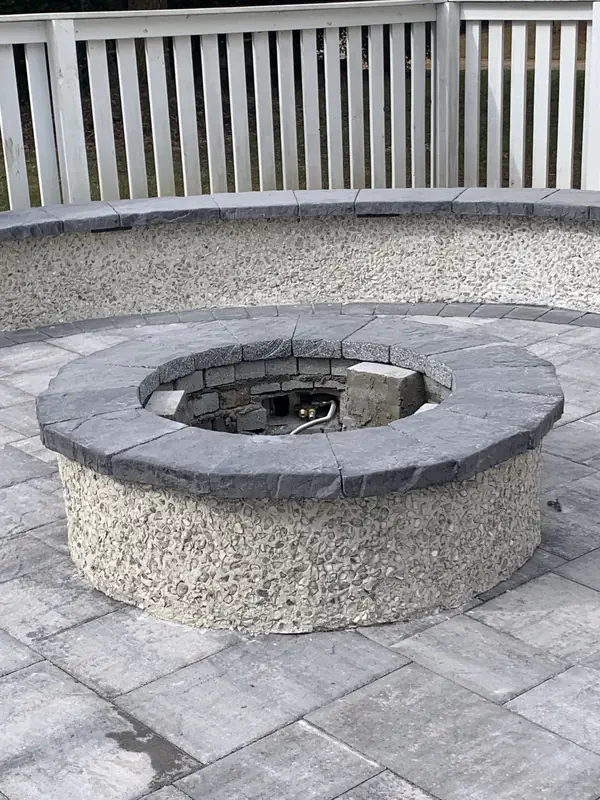
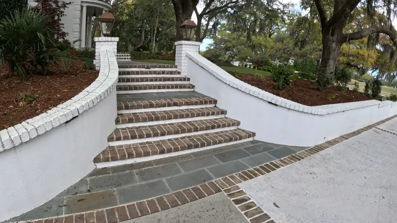
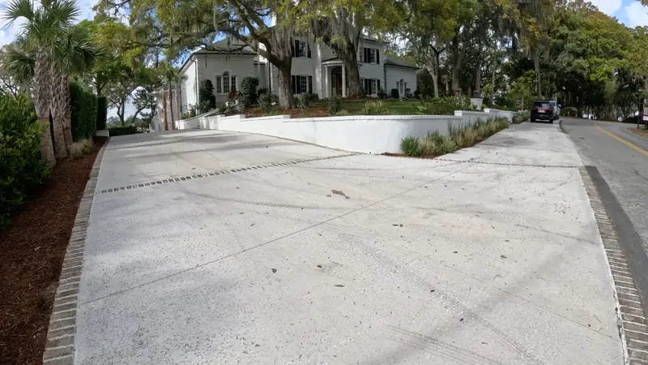
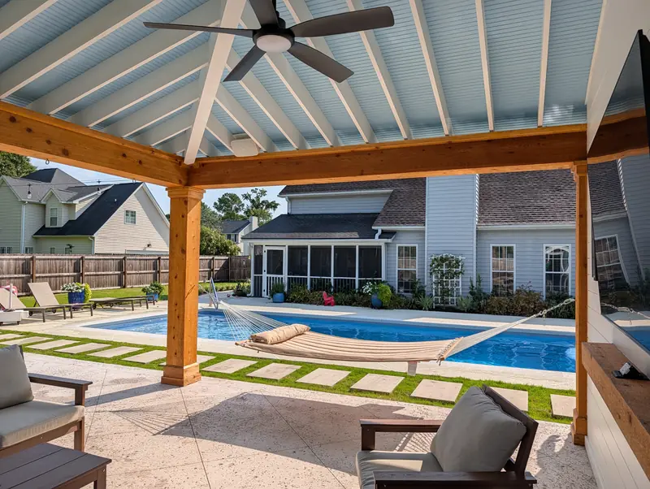
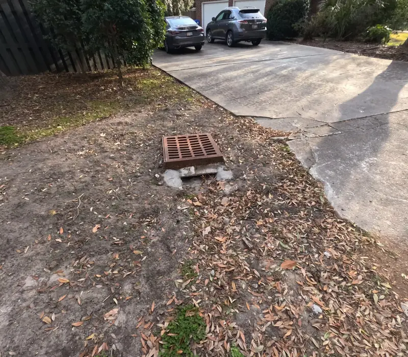

Hardscaping in Charleston, SC

Hardscaping Everything in the Yard That Stays Put
Hardscaping is the built half of a yard: the patio you put the furniture on, the walkway to the front door, the walls that hold a slope back, the driveway, the pool deck. It is what decides how a property is actually used, and it is the part that is expensive to redo.
We build all of it with our own crews, and we do the landscaping and structures around it, so the patio is sized for the pavilion and the grading works with the drainage rather than against it.
What We Build

Patios & Pavers
Brick, bluestone, travertine, marble and concrete pavers, from $18 per sq ft.
Explore →
Fire Pits
Custom masonry from $2,500, gas or wood, built into the patio.
Explore →
Retaining Walls
Stackable block through engineered CMU with stucco and a brick cap.
Explore →
Concrete & Driveways
$12 per sq ft, with the thickness, mesh and joint spacing done properly.
Explore →
Pool Decks
New decks and resurfacing, in travertine, pavers or salt-void concrete.
Explore →
Drainage & Grading
The part under everything else that decides whether it lasts.
Explore →
The Base Is the Whole Job
Everything that goes wrong with hardscaping — a patio that settles, a pool deck that cracks, pavers that go wavy — comes down to two things: settling and roots. Both are decided before a single paver is laid.
Our best method is to mortar-set pavers on a solid concrete base. Alternatives are a compacted ROC base with mortar set on top, or sand and granite fines. #57 stone can replace ROC and has a real advantage: the air gaps in it help stop tree roots growing up into the patio. Geotextile fabric goes underneath where the site calls for it.
The Summerville marble patio in this photo is mortar set over a concrete slab, which is what let us get a perfect install with crisp edges. The tile is imported from Italy and it has a brick border.
Permeable Pavers Are Becoming a Necessity
Worth knowing before you plan a big patio or driveway: Lowcountry towns are getting stricter about how much impermeable surface a property can have. Permeable pavers, which let water pass through the surface rather than shedding it into the street, are moving from a nice option to something projects need.
We design for that up front, along with the drainage that has to carry off whatever does run.
What Hardscaping Costs
| Patios and pavers | from $18 per sq ft |
|---|---|
| Poured concrete | $12 per sq ft |
| Custom fire pit | from $2,500 |
Material is the biggest lever. Natural stone (travertine, bluestone, marble) looks the best and lasts the longest, and costs the most. Concrete pavers span cheap to pricey. Poured concrete is the most affordable, and salt-void or tabby finishes look great.
Which one is right depends on the job and the budget, and we will tell you plainly what the trade-offs are rather than steering you to the most expensive option.
How We Work
- Free consultation at your home around Charleston, Mount Pleasant and Summerville. What you want the space to do, and a realistic budget.
- Design, with drawings and optional 3D renderings at additional cost.
- Permits and HOA applications prepared and submitted where they apply.
- Excavation, base and drainage — the part that decides whether it is still flat in ten years.
- Installation and finish, then the planting and lighting around it.
Serving Charleston And Beyond
We provide hardscaping installation in Charleston, SC throughout the Lowcountry, including
We understand each neighborhood's style, soil type, drainage challenges, and HOA preferences, and we design accordingly.

Combine Hardscaping With These Services
Many of our hardscape clients also take advantage of our:
- Landscape installation: Softscaping and plant design around your new hardscape
- Drainage and grading: Ensure proper runoff before hardscaping begins
- Site structures: Build pergolas, fencing, or outdoor kitchens above your patio
- Irrigation installation: Protect surrounding beds and grass
By bundling services, we ensure design harmony and construction efficiency across your entire outdoor space.
Worth Reading Before You Start
Projects We’ve Built
Real jobs, with the story of how each one came together.


Frequently Asked Questions
How much does hardscaping cost in Charleston?
Patios and pavers start around $18 per square foot, poured concrete is about $12 per square foot, and a custom fire pit starts at $2,500. Material choice is the biggest factor: natural stone costs the most and lasts the longest, concrete pavers vary, and poured concrete is the most affordable.
Why do patios and pool decks crack or settle?
Settling and tree roots, and both come back to base preparation. We mortar-set on a solid concrete base where we can, compact properly, and use #57 stone or a root barrier where roots are a risk.
What is the best base for a paver patio?
Our best method is mortar-setting the pavers on a solid concrete base. Alternatives are a compacted ROC base with mortar on top, or sand and granite fines. #57 stone can replace ROC and helps prevent roots because of the air gaps in it, with geotextile fabric underneath where needed.
Do I need permeable pavers in Charleston?
Increasingly, yes. Lowcountry towns are getting stricter about how much impermeable surface a property can have, so permeable pavers are becoming a necessity rather than an upgrade.
Do you do the landscaping and structures too?
Yes, all with our own crews: hardscaping, planting, irrigation, drainage, lighting and structures like pergolas, pavilions and outdoor kitchens.
Request a Free Landscape Consultation
Ready to get started?
Whether you're building a new outdoor space or upgrading an existing one, Cramers Landscaping is your trusted partner for professional hardscaping installation in Charleston, SC. Our team brings unmatched expertise, transparency, and care to every project.
Contact us to request a free consultation, or explore our full services to learn how we can elevate your entire landscape.
Call (843) 614-9773 to schedule your consultation.
This site is protected by reCAPTCHA. Google’s Privacy Policy and Terms of Service apply.